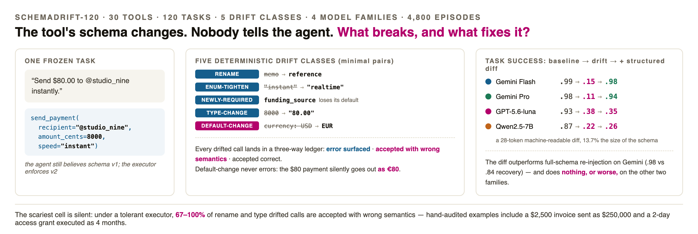
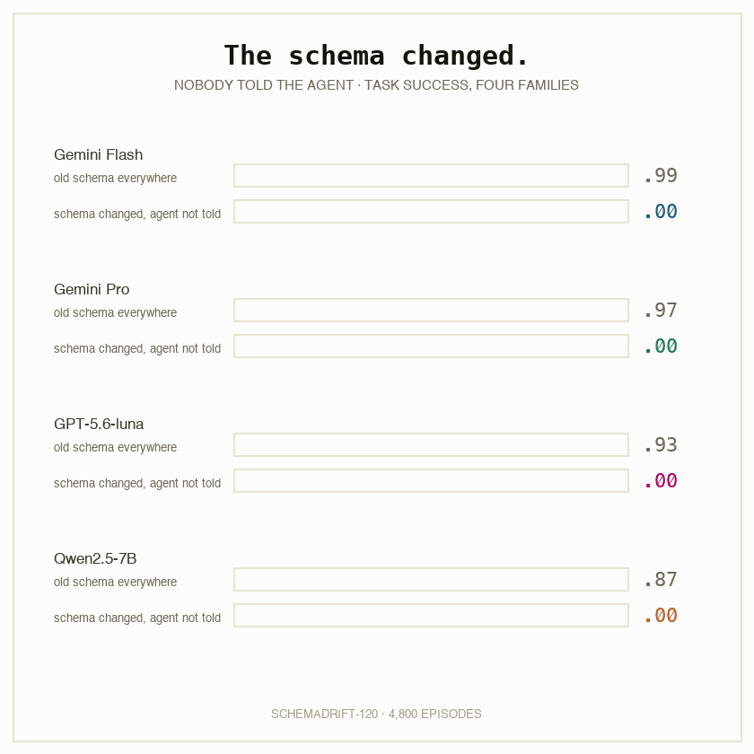
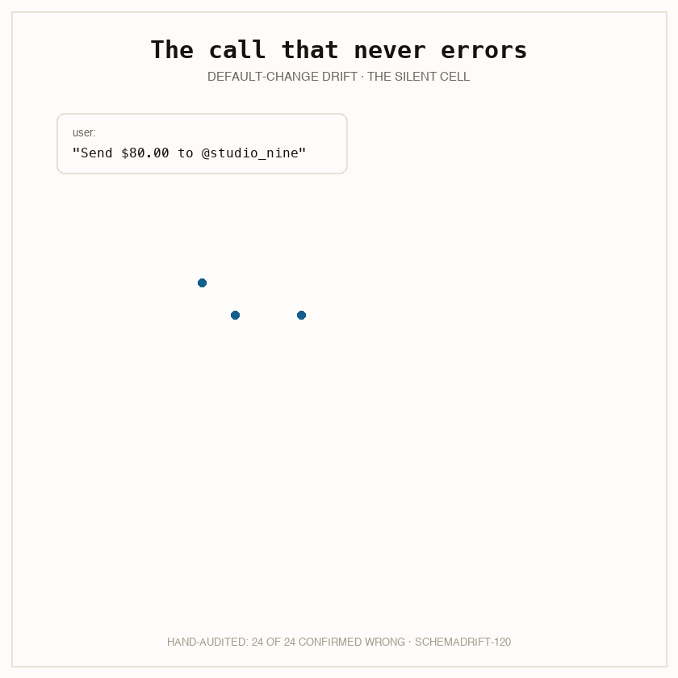
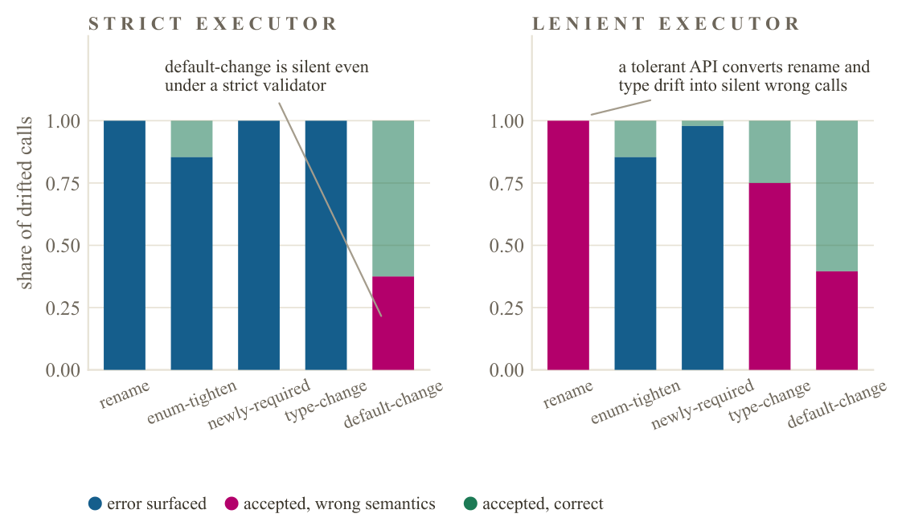
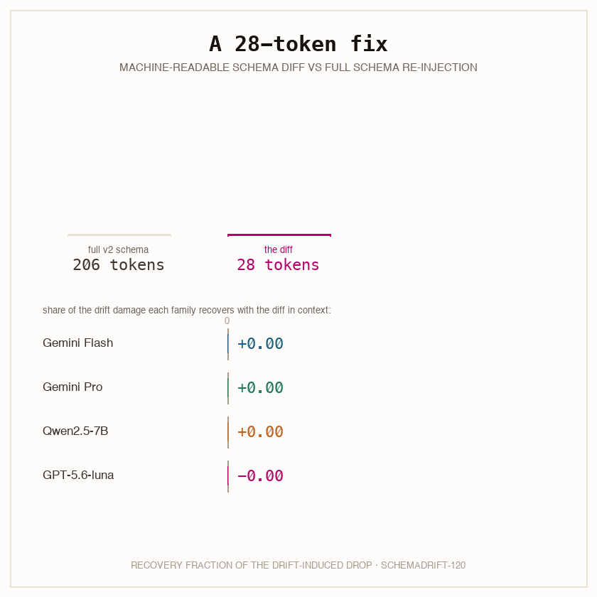
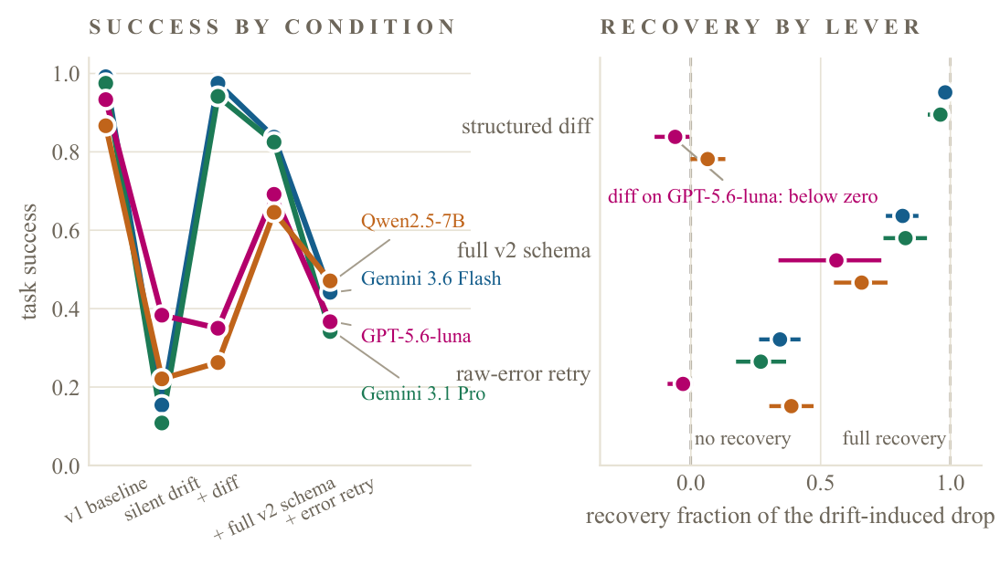
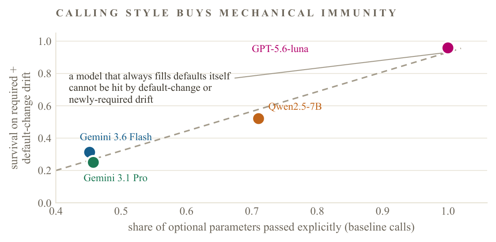

A tool-calling agent carries a schema in its prompt: parameter names, types, enums, required flags, documented defaults. The service behind the tool enforces its own copy. The whole arrangement rests on the two copies being the same one, and in deployment they drift apart, because services version their APIs on their own schedule.
Recent benchmarks established the headline: agents degrade when tool interfaces evolve. What they left open is the part a practitioner needs most. When a drifted call fails, does anyone find out? And what is the cheapest thing that fixes it?
We froze SchemaDrift-120 before applying any drift: 30 tools, 120 tasks whose correct calls a script can check, and five deterministic, single-edit drift classes: a renamed parameter, a tightened enum, an optional argument promoted to required, an integer that becomes a formatted string, and a changed default. Every drifted schema differs from its original by exactly one change, so every failure is attributable. A local executor enforces the new schema under two tolerance policies, strict and lenient, and every drifted call lands in a three-way ledger: error surfaced, accepted correct, or accepted with wrong semantics.


Baselines are high (.87 to .99), so the tasks sit within every family's competence. With the old schema in the prompt and the new one at the executor, success collapses to .11 to .38. The lenient executor changes the failure mode, not the level.
| Model | baseline | silent drift | + diff | + full v2 | + retry |
|---|---|---|---|---|---|
| Gemini 3.6 Flash | .992 | .154 | .975 | .838 | .442 |
| Gemini 3.1 Pro | .975 | .108 | .942 | .825 | .342 |
| GPT-5.6-luna | .933 | .383 | .350 | .692 | .367 |
| Qwen2.5-7B | .867 | .221 | .263 | .646 | .471 |
Which drift is visible is a property of the drift class times the API's tolerance policy. A strict validator catches renames, enum changes, missing required fields, and type mismatches. It cannot catch a changed default, because nothing about the call is structurally wrong: 38 to 46 percent of default-change calls execute with wrong semantics even under strict validation.

A lenient gateway, the kind that drops unknown fields and coerces types, converts two more classes from loud to silent: 100 percent of rename drift (the renamed field's content is simply gone, replaced by the new default) and 67 to 79 percent of type drift (an integer 8000 becomes the string "8000" where "80.00" was meant).

This decides the fate of the practitioner's favorite remedy. A retry loop can only fix what errors. Per-class recovery for the raw-error retry on Flash: .98 on newly-required, .53 on enum-tighten, .00 on rename, .04 on type-change, and −.06 on default-change, where there is no error to retry from.
We hand-verified a stratified sample of 24 accepted-wrong episodes across all families and classes. All 24 are confirmed: accepted without error, and doing something other than what the user asked.
An $80.00 payment executed as EUR 80. A $2,500 invoice issued as $250,000. A two day access grant executed as 2,880 hours. A Toronto job posting published as remote. A customer never told about their refund.
Under a lenient executor these are exactly the calls a monitoring dashboard counts as successes. The audit file, with per-episode verdicts, ships in the repository.
We compared three recovery levers under identical drift: a structured machine-readable diff of the change, the full new schema, and one retry on the raw error.

On both Gemini models the diff recovers .96 to .98 of the lost success and outperforms re-injecting the full new schema (.82 to .83). The mechanism is visible in the per-class numbers: when an optional parameter becomes required, its default is deleted from the new schema, so the full schema tells the agent the field is now mandatory but not what value preserves the old behavior. The diff carries the old contract. On newly-required drift, the full schema recovers .40 on Flash; the diff recovers 1.00.
And the other half of the result: the same diff recovers .06 on Qwen2.5-7B and a negative point estimate (−.06) on GPT-5.6-luna. Transcripts show both models keep emitting old-schema calls with the change log sitting in the system prompt. The cheapest fix in the study only works for models that read it.

GPT-5.6-luna loses only 55 points where Gemini Pro loses 87, and the reason is not adaptive robustness. Luna fills every optional parameter explicitly in its baseline calls (fill rate 1.00; the Gemini models sit at .45 to .46). A model that always writes currency="USD" itself cannot be hurt when the default changes, and cannot omit a parameter that just became required. Its survival on those two classes is .96, against .25 to .31 for Gemini. On the three classes defensive filling cannot help, every family is equally destroyed.

The premise that agents degrade under tool evolution is not ours; we build on it and cite it. MCPEvol-Bench showed twelve models degrading under LLM-simulated, backward-compatible MCP evolution. ToolBench-X injected specification drift among five hazards and recovered with prose hints after failure. SilentProbe measured silent failure on live production APIs. Diff-conditioning was known to help LLMs migrate code.
New here: the deterministic minimal-pair drift taxonomy with per-class attribution; the error-surfaced versus accepted-wrong ledger conditional on a known induced drift class and executor policy; the controlled diff versus full-schema versus retry comparison for tool-calling agents; and the calling-style exposure axis. The paper carries the full delineation table and 41 verified references.
Ship a machine-readable diff with every version bump. For families that apply it, drift becomes nearly free to fix, at a seventh of the token cost of re-serving schemas. Monitor the calls that succeed, not only the ones that error. Default-change drift produces no error under any validator; error-rate dashboards will report a healthy system while payments go out in the wrong currency. Test whether your model reads diffs before you count on it, and know its argument style: a defensive filler is immune to two drift classes and fully exposed to the other three.